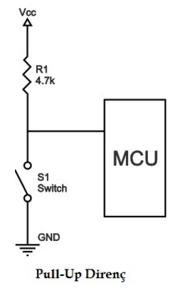
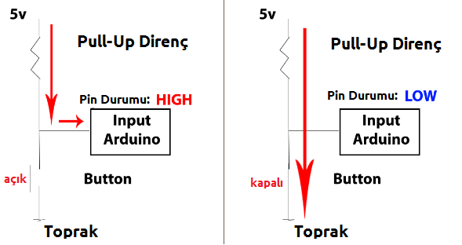
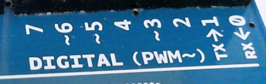

ana sayfa | github adresi | ham sayfa
8. Yapı¶
8.1. Demirbaşlar¶
8.1.1. setup()¶
Arduino programlarımızda vazgeçilmez iki fonksiyonumuz var, bunlardan biri setup(). setup() fonksiyonunun görevi Arduino kartına güç geldiği, yani kart ilk çalıştığı zaman sadece bir kere içerisindeki kodları çalıştırmak ve sonlanmak. Yani bu fonksiyonumuz Arduino’nun çalışması ile birlikte sadece bir sefer görev görüyor. Bundan dolayı bu fonksiyona genelde bir kere çalışmasını istediğimiz ayar komutlarımızı yazıyoruz. Örneğin hangi pinin ne iş yapacağını Arduino’ya bir kere bildirmemiz yeterli, o yüzden setup() fonksiyonuna yazıyoruz.
8.1.2. loop()¶
Arduino programlarımızda olmazsa olmaz fonksiyonlardan 2.si loop(). loop() fonksiyonu içerisine yazılan kodlar setup() fonksiyonu işlevini gerçekleştirip dinlenmeye çekildiği zaman çalışmaya başlar ve setup() fonksiyonunun aksine Arduino’nun güçü kesilene kadar çalışmaya devam eder. setup()’daki kodlarımız bir kere çalışıyordu hatırlıyoruzki.
setup() ve loop() fonksiyonları Arduino IDE üzerinde de Web Editor üzerinde de yeni proje oluşturduğunuzda hazır olarak gelir ve şu şekilde konumlanırlar:
void setup() {
// bir kere çalışmasını istediğiniz kodları buraya yazın
}
void loop() {
// sürekli çalışacak kodları buraya yazın
}
8.2. Kontrol Yapıları¶
8.2.1. if¶
if fonksiyonu diğer tüm programlama dillerinde olduğu ve adının da kendisini ifade ettiği gibi karşılaştırma işi görüyor. if İngilizcede eğer anlamına geliyor, yani if fonksiyonu ile eğer istediğimiz koşul gerçekleşiyor ise işlem yaptırabiliyoruz. Bu konuyu örnekle daha iyi kavrayabiliriz.
1 2 3 | if(koşul){
//gerçekleşecek durum
}
|
İlk satırda if fonksiyonumuza bir koşul verdik. Eğer bu koşul sağlanır ise -eğer veri tipleri hakkında bilginiz varsa, True döndürür ise- 2. satıra yazdığımız kodlar çalışacak. Eğer koşul gerçekleşmemiş ise programımız bu 3 satırı da görmemiş gibi davranıp işlem yapmadan geçecek.
Koşul koşul diyoruz, peki nedir bu koşul? Örneğin bir arkadaşınız sizden borç istedi, ancak paranız 50TL’den fazla ise borç vermek istiyorsunuz. Çünkü siz de sıkıntıya girmek istemiyorsunuz. Ozaman paranızı kontrol eder daha sonra verirsiniz. Peki paranızın 50TL’den fazla olup olmadığını nasıl kontrol edeceksiniz? Karşılaştırma operatörleri ile. Operatörlere hemen hızlıca örneğimiz üzerinden göz atalım.
Uyarı
Karşılaştırma operatörleri örneklerinde para birimi kullanılmamıştır.
para == 50 (para 50 ise) para != 50 (para 50 değil ise) para < 50 (para 50’den küçük ise) para > 50 (para 50’den yüksek ise) para <= 50 (para 50’den küçük ya da 50’ye eşit ise -iki durumdan birisinin geçerli olması yeterli-) para >= 50 (para 50’den büyük ya da 50’ye eşit ise -iki durumdan birisinin geçerli olması yeterli-)
Bu öğrendiğimiz bilgiyi de kullanarak yukardaki örneğimizi koda dökelim.
int para = 75; // paramızın 75 olduğunu belirttik
if( para > 50 ){ // paranın 50'den yüksek olup olmadığını tespit ettik
borcVer(); // 75, 50'den yüksek olduğu için borcVer() fonksiyonumuz çalıştı.
// 75 değilde 20 olsaydı bu kısım çalışmayacaktı.
}
Uyarı
Bu örnekte bilmediğiniz int ve borcVer() -özel fonksiyon- ifadeleri mevcut. Dökümanın ilerleyen aşamalarında bunlara da değineceğiz. Şuanlık if yapısına odaklanalım.
8.2.2. if...else¶
if fonksiyonunun ne işe yaradığını öğrendik. Eğer işler yolunda giderse istediğimiz fonksiyonun çalışmasını sağlıyordu. Peki ya yolunda gitmezse? İşte tam burada işin içine else giriyor. else‘nin kelime anlamı tam olarak aksi halde yani if koşulunun aksi halinde, koşul gerçekleşmediği/sağlanmadığı durumda. if’deki örneğimizle devam edelim. Eğer paramız 50TL’nin altında ise ve arkadaşımıza borç veremeyeceksek mazeretimizi belirtmemiz gerekir -nezaketen-.
int para = 75; // paramızın 75 olduğunu belirttik
if( para > 50 ){ // paranın 50'den yüksek olup olmadığını tespit ettik
borcVer(); // 75, 50'den yüksek olduğu için borcVer() fonksiyonumuz çalıştı. 75 değilde 20 olsaydı bu kısım çalışmayacaktı.
}
else{ // eğer if koşulu sağlanmadıysa
nazikceDurumuBelirt();
}
Dikkat
else ifadesi herhangi bir koşul almaz. Çünkü if ifadesinin koşulunu kapsamayan tüm durumlar aslında else’nin koşuludur. if yanlış ise else doğrudur. if doğru ise else’ye bakılmadan geçilir.
Dikkat
else tamamen opsiyoneldir, olmasa da olur. Olması herzaman daha iyidir, harici durumları yakalamak önemlidir ve kararlılık sağlar.
8.2.3. if..elif..else¶
if ile bir koşulu denetledik, ancak koşul doğru çıkmadı. else ile de koşul doğru değil ile yapılacakları belirledik. Koşulumuz doğru olmadığı için programımız hemen else’ye geçecek. Ancak biz bunu istemiyoruz, ikinci bir şans vermek istiyoruz koşula. Çünkü herkes ikinci şansı hak eder. İkinci -ve ya üçüncü, dördüncü, ....- şansı elif fonksiyonu ile veriyoruz. Hepsinin kelime anlamına değindik elif’in de değinelim. else ve if isimlerini miksere atınca elif çıkıyor. Çünkü işlevi de ikisinin arasında bir şey. Borç örneği üzerinden gidelim. Eğer parasal durumumuz uygunsa arkadaşımıza borç verdik, eğer uygun değilse kibar bir dille bunu belirttik. Peki para durumumuz kısa bir süre içinde uygun olacak ve arkadaşımıza borç verebilecek duruma gelecek isek? Bu durum ne if ne de else fonksiyonlarımıza girer.
Hemen örneğimize 3. durumu da ekleyelim.
int para = 75; // paramızın 75 olduğunu belirttik
if( para > 50 ){ // paranın 50'den yüksek olup olmadığını tespit ettik
borcVer(); // 75, 50'den yüksek olduğu için borcVer() fonksiyonumuz çalıştı. 75 değilde 20 olsaydı bu kısım çalışmayacaktı.
}
elif(para==45){ //eğer para 45 ise
yakinZamandaVerebileceğiniBelirt();
}
else{ // eğer if koşulu sağlanmadıysa
nazikceDurumuBelirt();
}
Dikkat
Bir karşılaştırmada en fazla bir tane if ve else olabilir ancak elif için herhangi bir sınır yok. elif değimi if ile else’nin ortasına yazılır.
Dikkat
elif yerine birsürü if de kullanılabilir. Ama bu durumda program her if’i tek tek kontrol eder ve gereksiz kaynak tüketir. Bolca elif ile yazılmış bir karşılaştırmada herhangi bir elif koşulu sağlanırsa diğer hiçbir elif kontrol edilmez, atlanır. Böylece kaynak tüketimi kontrollü olur.
8.3. Sözdizimi¶
8.3.1. ; (noktalıvirgül)¶
Her belirtiden sonra ; (noktalı virgül) konur. Örneğin;
int a = 1;
digitalWrite(1, 1);
if(1>2);
Dikkat
if, elif, else, while, for gibi süslü parantez ile kapsama alanını belirttiğimiz fonksiyonlarda ; kullanır isek kapsama alanı kendinden sonraki satır ile kısıtlı kalır.
if(koşul);
fonksiyon1();
fonksiyon2();
Bu örnekte if fonksiyonu koşul doğru ise kapsama alanındaki kodu çalıştıracaktır. Yani kendisinden sonraki satırı. fonksiyon1 sadece if sağlandığı zaman çalışırken fonksiyon2 hertürlü çalışacak. Çünkü o if’in kapsama alanında değil.
8.3.2. {} (süslü parantez)¶
Süslü parantezler belli yerlerde, kapsama alanı belirtmek için kullanılır. Örneğin fonksiyon oluştururken hangi kodların o fonksiyona dahil olacağını belirtirken ya da karşılaştırma operatörlerinin (if-elseif-else) kapsama alanlarını belirlerken ve döngülerde kullanılır. { ile başlayan ifade } ile bitmek zorundadır. Kapsama alanı içerisine girmesini istediğimiz kodlarımızı ise bu iki parantez arasına yazarız.
Dikkat
Süslü parantezler ile noktalı virgül aynı yerde kullanılmaz. if(){}; yanlış bir kullanımdır. } ifadesi satırın bittiği anlamına gelir ve ;’e gerek kalmaz. İkisi aynı yerde kullanılırsa derleyici hata verecektir.
//döngülerde kullanımı
while(koşul){ //kapsama alanı başlangıcı
} //kapsama alanı bitişi
if(koşul){ //kapsama alanı başlangıcı
} //kapsama alanı bitişi
Uyarı
Bu örneklerde bilmediğiniz fonksiyonlar olabilir, sadece süslü parantezlere dikkat edin lütfen.
Süslü parantezlerin tam olarak nerede kullanıldığı önemli değil, önemli olan neyden sonra ve önce kullanıldığı. Örneğin aşağıdaki iki kullanımda da hata almadan program yazabilirsiniz.
while(koşul){
}
while(koşul)
{
}
8.3.3. // (yorum satırı)¶
Yorum satırları aslında yoktur. Kodlarınızın arasında görünen, ama hiçbir değer taşımayan, derleme sırasında silinen satırlar düşünün. Peki bunları neden kullanırız? Tabikide hatırlatma amacı ile. Hemen örneklerimize geçelim.
int ledPin = 3; //3. pine bağlı olan LED kırmızı
int ledPin2 = 4; //4. pine bağlı olan LED siyah
Pinlerde hangi renk LED olduğunu böylece unutsak bile aynı satırda yazdığı için görüp ona göre işlem yapabileceğiz.
Bu Arada
Yorum satırları programınız derlenirken çıkarıldığı için Arduino kartınızın hafızasında yer kaplamaz.
8.3.4. /* */ (çoklu yorum satırı)¶
Yorum satırımızın birden fazla satırdan oluşan versiyonu. Çok fazla içerik yazmanız gerektiği zaman kullanılır. /* ile başlar ve */ ile biter. Bu iki belirteçin arasına yazılan her şey yorum olarak kabul edilir ve derlenirken görmezden gelinir.
/*
bu yorum satırı
bu da 2. satırı
pinMode(3, OUTPUT);
*/
int buton = 5;
Üstteki örnekte gördüğünüz gibi parlayan satırlar yorum olduğu için işleme tabi tutulmaz. Yorumun içinde yazılan fonksiyon da görmezden gelinir!
8.3.5. #define¶
Değişkenlere ve veri tiplerine henüz geçmedik ancak define deyimi bunlardan önce işlenmesi gereken bir konu. Define’nin değişkenlerden farkı, değişkenler Arduino üzerinde çalıştırılırken define ile bildirilenler derleyici üzerinde işleme tabi tutulur. Örneğin
#define ledPin 5
şeklinde kullandığımızda aslında Arduino IDE’ye -Arduino kartına değil!- ledPin gördüğün yerlere 5 yaz diyoruz. Değişkenlerde durum farklı, değişkenlerde ise Arduino kartına değişkenler arasından ledPin’i bul ve değerine bak diyoruz. Böylece işlem gerektiriyor. Hadi biraz daha kod ekleyelim. -Önemli olan define’yi anlayabilmeniz, diğer bilmediğimiz konuları görmezden gelelim.-
#define ledPin 5
pinMode(ledPin, 5);
digitalWrite(ledPin, HIGH);
Bu programımızı Arduino IDE ile derleyip Arduino kartımıza yüklediğimizde aslında Arduino kartımıza aşağıdaki kod yüklenecektir.
pinMode(5, 5);
digitalWrite(5, HIGH);
define’nin Arduino IDE tarafında işleme tabi tutulduğunu anlayabildiysek çok iyi. Anlayamadıysak lütfen tekrar okuyalım.
Dikkat
Değeri değişmeyecek veriler için define deyimi değişken kullanmaktan daha akıllıca olabilir. Değişkenler hem hafıza kaplayacaktır hemde işlem kapasitesini azaltacaktır.
Dikkat
Aşağıdaki kullanımlar hata almanıza sebep olur!
#define ledPin 3; define deyimi derleyici tarafında çalıştığı için noktalı virgül ile sonlandırılmaz!
#define ledPin = 3 define deyimi iki kelimelik değer alabilir. Eşittir ile belirtilmesine gerek yok. Doğru kullanımı:
#define görülünceDeğiştirilecekİfade yerineKoyulacakİfade
8.3.6. #include¶
include deyimini projemize dışardan kütüphane eklerken kullanıyoruz.
#include <avr/pgmspace.h>
prog_uint16_t myConstants[] PROGMEM = {0, 21140, 702 , 9128, 0, 25764, 8456,
0,0,0,0,0,0,0,0,29810,8968,29762,29762,4500};
8.4. Aritmetik Operatörler¶
8.4.1. = (atama)¶
Atama operatörünü değişken belirlerken kullanıyoruz. Değişkenlerin değerlerini değiştirmek için bolca kullandığımız bir operatör.
int motorPin = 5;
String isim = "ard-e";
int motorPin = 7; //motor pinini 7 olarak değiştirdik.
8.4.2. + (ekleme)¶
Matematiksel işlemler için kullanılır.
int sayi1 = 5;
int sayi2 = 10;
int sonuc; //sonuc adında bir değişken oluşturduk ancak değerini atamadık
sonuc = sayi1 + sayi2; //sonuc değişkeninin değerini şimdi atadık.
Kullanımı: sonuç = değer1 + değer2;
8.4.3. - (çıkarma)¶
Matematiksel işlemler için kullanılır.
int sayi1 = 10;
int sayi2 = 5;
int sonuc; //sonuc adında bir değişken oluşturduk ancak değerini atamadık
sonuc = sayi1 - sayi2; //sonuc değişkeninin değerini şimdi atadık.
Kullanımı: sonuç = değer1 - değer2;
8.4.4. * (çarpma)¶
Matematiksel işlemler için kullanılır.
int sayi1 = 10;
int sayi2 = 5;
int sonuc; //sonuc adında bir değişken oluşturduk ancak değerini atamadık
sonuc = sayi1 * sayi2; //sonuc değişkeninin değerini şimdi atadık.
Kullanımı: sonuç = değer1 * değer2;
8.4.5. / (bölme)¶
Matematiksel işlemler için kullanılır.
int sayi1 = 50;
int sayi2 = 5;
int sonuc; //sonuc adında bir değişken oluşturduk ancak değerini atamadık
sonuc = sayi1 / sayi2; //sonuc değişkeninin değerini şimdi atadık.
Kullanımı: sonuç = değer1 / değer2;
8.5. Karşılaştırma Operatörleri¶
8.5.1. == (eşitse)¶
Karşılaştırma operatörleri, bir şeyleri kontrol etmemiz gerektiğinde, duruma göre bir şeyler yapmamız gerektiğinde kullandığımız, elimiz ayağımız. İlk karşılaştırma operatörümüz == , kelime anlamı olarak eşitse diyebiliriz. Karıştırılmaması gereken nokta çift eşittir olması. Çünkü tek eşittir atama operatörüdür. Görev bildirirken kullanılır.
Karşılaştırma operatörlerinde örneklerimizi if fonksiyonu ile vereceğiz. Eğer karşılaştırmamız doğru ise -True değer döndürür ise- if çalışacaktır.
int sayi = 50;
if(sayi == 10){
//icerik
}
- sayi değişkeninin değeri 10 ise if fonksiyonumuzun içeriği çalışacak. Ancak sayi değişkeninin değeri 50 olduğu için çalışmıyor, eğer var ise else ifleri kontrol ediyor ve
- var ise elseye geçiyor.
Eşitse operatöründe kontrol edilen değişken, istenilen değer değil ise sonuç herzaman False’dir.
8.5.2. != (eşit değilse)¶
İkinci karşılaştırma operatörümüz eşit değilse. Eşitsede çift eşittir kullanıyorduk bunda da ünlem eşittir (!=) kullanacağız.
int sayi = 50;
if(sayi != 10){
//icerik
}
sayi değişkeninin değeri 10 değil ise if fonksiyonumuzun içeriği çalışacak. Karşılaştırma doğru, sayi değeri 10 değilde 50 olduğu için if fonksiyonunun içeriği çalışacak.
Eşit değilse operatöründe kontrol edilen değişken, istenilen değişken değil ise sonuç herzaman True’dir.
8.5.3. < (küçükse)¶
Küçükse operatörümüz sayılarda kullanılır ve kontrol edilen sayı hedeften küçük ise karşılaştırma doğrudur.
int sayi = 50;
if(sayi < 51){
//icerik
}
sayi değişkeninin değeri 51’den düşük olduğu için if fonksiyonunun içeriği çalışacak.
8.5.4. > (büyükse)¶
Büyükse operatörümüz sayılarda kullanılır ve kontrol edilen sayı hedeften büyükse ise karşılaştırma doğrudur.
int sayi = 50;
if(sayi > 51){
//icerik
}
sayi değişkeninin değeri 51’den düşük olduğu için if fonksiyonunun içeriği çalışmayacak.
8.5.5. <= (küçük ya da eşitse)¶
Not
küçükse operatöründen farkı bu sefer kontrol edilen değer karşılaştırılan değerden küçük ya da karşılaştırılan değere eşitse sonuç True olacak, karşılaştırma doğru olacaktır.
8.5.6. >= (büyük ya da eşitse)¶
Not
büyükse operatöründen farkı bu sefer kontrol edilen değer karşılaştırılan değerden büyük ya da karşılaştırılan değere eşitse sonuç True olacak, karşılaştırma doğru olacaktır.
8.6. Boolean Operatörleri¶
8.6.1. && (ve)¶
Düşünün ki birden fazla karşılaştırma yapmanız gerekiyor ve karşılaştırmalardan ikisi de doğruysa farklı bir işlem yaptırmanız gerekiyor. Bunu nasıl yaparsınız? İki if’i iç içe kullanmak bir çözüm olabilir, hadi deneyelim.
if(karşılaştırma1){
//karşılaştırma 1 doğruysa burası çalışacak
if(karşılaştırma2){
//karşılaştırma2 doğruysa buraya gelinmiş ve haliyle karşılaştırma1 de doğrudur demektir
}
}
Sizce de biraz kötü, acemice ve amatörce görünmüyor mu? Bu işi tek bir if ile de çözebiliriz.
if( karşılaştırma1 && karşılaştırma2 ){
//içerik
}
&& operatöründe her iki değer doğru ise sonuç True döndürülür ve if çalışır. İkisinden birinin doğru olması durumu kurtarmayacaktır.
Uyarı
Bu operatör ile istenildiği kadar karşılaştırma birleştirilebilir, sınırlama yoktur.
8.6.2. || (ve ya)¶
|| operatörünün && operatöründen farkı iki karşılaştırmadan herhangi biri doğru ise sonuç doğru sayılır. Yani karşılaştırmaların hepsi yanlış olmadığı, en az bir tanesi doğru olduğu sürece durumu kurtarır.
if(karşılaştırma1 || karşılaştırma2){
//içerik
}
İçeriğin çalışması için iki karşılaştırmadan birinin doğru olması yeterli olacaktır.
Uyarı
Bu operatör ile istenildiği kadar karşılaştırma birleştirilebilir, sınırlama yoktur.
8.6.3. ! (olumsuzsa)¶
Boolean veri tipine Veri Tipleri başlığında değindik. Eğer veri olumsuzsa çalışması için bu operatörü kullanırız. Örneğin,
if(!x){
//içerik
}
Eğer x değişkeninin değeri False ise (integer’de sıfır ise) içerik çalışacaktır.
8.7. Basitleştiren Operatörler¶
8.7.1. ++ (artırma) / – (azaltma)¶
Rakam değeri alan değişkenlerde (long, int, ...) bir artırma ve ya bir azaltma işlemi için bu operatörleri kullanıyoruz. Elimizde bir x değişkeni olsun ve değerini 1 arttırmak istiyoruz diyelim. Nasıl yaparız?
int x = 5;
x = x + 1;
Bu şekilde başta 5 olan x değişkenimizin değerine -yani kendisine- 1 ekleyerek yeni değeri 6 yaptık. Bunu daha pratik, daha okunaklı yapabilmemiz mümkün. Hadi operatörleri kullanalım.
int x = 5;
x++;
Yukarıdaki kodumuz ile bunun arasında hiçbir fark yok. Aynı işlem değer düşürme için de kullanılabiliyor. Bu sefer + değil - sembolünü kullanacağız.
int x = 5;
x--;
Başta değeri 5 olan x değişkenimizin değerini 2. satırda 1 azalttık ve yeni değeri 4 oldu. Eğer operatörümüzü değişkenden sonra (x++) değil de önce kullanırsak farklı bir durum ile karşılaşıyoruz. Peki nedir bu durum? Operatörü değişkenden sonra (x++) kullandığımız zaman değişkenimizin değeri bir artıyor ancak arttırıldığı anda eğer yazdırma işlemi yapılırsa eski değeri (1 eklenmemiş hali) yazdırılıyor. Bunun sebebi, programın bu kullanımı değeri arttır ama bu satırdan sonra geçerli olsun şeklinde yorumlaması. Tam olarak anlamamış olabilirsiniz, çok önemsemenize gerek yok. İlerleyen zamanlarda bu konuyu anladığınızı fark edeceksiniz.
Peki değişkenden önce kullanır isek ne olur? İşlemin yapıldığı satırda değişkenin yeni hali, bir artırılmış hali esas alınır ve üzerinde işlem yapılır. Örneği anlamadıysanız bu kısmı pas geçebilirsiniz.
int x;
x = 1;
//++x'in değeri şuan 2
x = 1;
//x++'in değeri şuan 1, ancak x bir artırıldı
//x'in değeri şuan 2
8.7.2. += , -= , *= , /=¶
x++ ve x– operatörlerinden farklı olarak (x değişken) busefer işlemimizdeki referans sayı 1 olmayacak, biz belirleyeceğiz. Kullanımları:
x -= y; // eşdeğer ifadesi: x = x - y;
x += y; // eşdeğer ifadesi: x = x + y;
x *= y; // eşdeğer ifadesi: x = x * y;
x /= y; // eşdeğer ifadesi: x = x / y;
Burada x: üzerinde değişiklik yapmak istediğimiz değişken, y: değişiklik yapmak istediğimiz referans sayı Örnek:
x = 2;
x += 4; // x'in değeri şuan: 6 anlamı:x'e 4 ekle
x -= 3; // x'in değeri şuan: 3 anlamı:x'den 3 çıkar
x *= 10; // x'in değeri şuan: 30 anlamı:x'i 10 ile çarp
x /= 2; // x'in değeri şuan: 15 anlamı:x'i 2'ye böl
9. Değişkenler¶
9.1. Sabitler¶
9.1.1. HIGH | LOW¶
HIGH ve LOW ifadeleri Arduino kartımızın dijital pinlerindeki güç durumunu ifade eder. HIGH enerji var, LOW enerji yok anlamına gelir. Aynı zaman da HIGH yerine 1, LOW yerine 0 kullanabilirsiniz. Çünkü dijital pinlerde temel mantık gücün olması ya da olmaması ile alakalıdır. Arası olamaz.
9.1.2. INPUT | OUTPUT¶
Bir diğer sabit değişkenlerimiz ise INPUT ile OUTPUT. Kendilerinin kelime anlamları sırasıyla GİRİŞ ve ÇIKIŞ. Arduino kartımızdaki dijital pinleri hangi amaçla kullanacağımızı belirlemek için kullanıyoruz. Örneğin D3 pinini (3. dijital pin) bir butondan gelen değeri okumak için kullanacaksak bunu INPUT olarak atamalıyız çünkü Arduino kartımıza dışarıdan bir değer gelecek, içeriye girecek. Ancak dijital pini kullanarak LED yakmak istediğimiz zaman bu pini OUTPUT olarak atamalıyız. Çünkü busefer güç kartımızdan çıkacak ve LED’e gidecek. pinMode() fonksiyonunda buna tekrar değineceğiz.
9.1.3. INPUT_PULLUP | LED_BUILTIN¶
Aslında birbiriyle alakası olmasa da bu iki sabit değişkeni de aynı başlık altına aldım. Tek tek inceleyeceğiz.
Öncelikle INPUT_PULLUP‘a bakalım. Arduino pininden bir buton ile değer okuduğumuzu var sayalım. Eğer butona basar isek pindeki değeri lojik 1 okuruz bu da enerji var , butona basılıyor demektir. Peki ya basılmıyor ise? Aslında ozaman lojik 0 değerini okumamız gerekir. Ancak MCU dediğimiz, Arduinomuzun üzerinde bulunan mikro denetleyicimiz bazen kararsızlıkta kalabiliyor, bu tamamen butondan gelen güce bağlı olarak. Bu yüzden butonumuzun Arduino pinine bağladığımız bacağını aynı zamanda bir direnç ile VCC pinine (5v ya da 3.3v pin’i) bağlıyoruz. Bu şekilde oluşabilecek kararsızlık durumunu ortadan kaldırıyoruz.
Pull-Up direnç kullandığımız zaman durum terse dönüyor, busefer butona basmadığımız zaman Arduino’muza lojik 1 değeri gidecek. Kodumuzu yazarken buna dikkat etmeliyiz. Aynı şekilde bastığımız zaman değer değişecek ve lojik 0 olacak.
Peki kararsızlık durumunu önlemek için direnç mi kullanmamız gerekiyor? Aslında evet, başka çaremiz yok. Ama size güzel bir haberim var, bunu manuel yapmak zorunda değilsiniz Arduino’nun mikrodenetleyicisi bu özelliğe sahip. INPUT ile pinimizin giriş olarak kullanılacağını belirliyorduk hatırladıysanız. INPUT_PULLUP ile de Arduino’ya pinin giriş olacağını, ancak pull-up direnç kullanılacağını belirtiyoruz. Arduino’muz bu işi bizim için hallediyor.
Önemli
Pull-UP direnç kullandığımız zaman butona basılmıyor ise 5V değer okuyoruz. Eğer siz tam tersini, yani basıldığı zaman 5V değer okunmasını istiyorsanız Pull-DOWN direnci araştırabilirsiniz. Ancak Arduino’da bunun için bir sabit değişken bulunmuyor.
Peki, nedir bu LED_BUILTIN ? Çoğu Arduino kartı üzerinde sizin kullanımınız için hazırda bekleyen bir LED bulunduruyor (direnci ile birlikte). Ve bu LED çoğu kartta 13. dijital pine bağlı. LED_BUILTIN özetle bu LED’in bağlı olduğu pini ifade ediyor. Arduino UNO’da LED_BUILTIN pinine ya da 13. dijital pine güç vermeniz aynı anlama geliyor. Ancak farklı kartlar arasında bir standart oturtmak için LED_BUILTIN ifadesi var.
9.2. Veri Tipleri¶
9.2.1. void¶
void ifadesini sadece fonksiyon tanımlarken kullanıyoruz. Fonksiyonumuza sadece işlem yapacağını, işleme dair bir bilgiyi bize geri göndermeyeceğiniz ifade ediyor. Yani bir değer döndürmesini istemediğimiz fonksiyonlarımızda void ifadesini kullanıyoruz.
void setup(){
// ...
}
void loop(){
// ...
}
void ardeOzelFonksiyonu(){
// ...
}
9.2.2. boolean¶
boolean veri tipi sadece iki farklı değer alabilir. True ve False. Bir kontrol mekanizması oluşturmak istediğimizde bolca boolean değişkenden yararlanacağız. Ayrıca her bir boolean değişken hafızada sadece 1 byte yer kaplar.
boolean durum = True;
9.2.3. char¶
char veri tipi bir karakterlik veri tutmak istediğimiz zaman kullandığımız veri tipidir. Yine her char tipindeki değişken hafızada 1 byte yer kaplar.
char karakterimiz = 'A';
char karakterimiz = 65;
A harfinin ASCII karşılığı 65. Yani her iki tanımlamada da değişkenimiz A harfini taşıyor. char veri tipi ASCII değerler de alabilir.
9.2.4. byte¶
0-255 arasındaki sayıları binary tipinde tutabilir.
byte b = B10010; // "B" binary olduğunu ifade ediyor (B10010 = 18 decimal)
// B10010 = 18
9.2.5. int¶
Rakamları tutmamız gerektiğinde başvurduğumuz ilk yol: int. Arduino UNO (ve diğer AtMEGA taşıyan kartlarda) int veri tipi 16 bit (2 byte) veri tutabilir. Bu da -32,768 ile 32,767 arasında bir değer taşıyabileceği anlamına geliyor. (en düşük değer -2^15 ve en yüksek değer (2^15)-1 olabilir).
Arduino DUE ve SAMD taşıyan kartlarda ise (MKR1000 ve Zero gibi) int veri tipi 32 bit (4 byte) veri tutabilir. Bu da -2,147,483,648 ile 2,147,483,647 arasında değer tutabilir demektir. (en düşük değer -2^31 ve en yüksek değer (2^31)-1 olabilir).
int yil = 2017;
int maxDeger = 32767; // atmega denetleyiciye sahip kartlar için
9.2.6. unsigned int¶
Arduino UNO ve diğer ATMEGA denetleyiciye sahip kartlarda unsigned int veri tipi 2 byte veri depolayabilir. Bu da 0 ile 65,535 arasında değer alabilir demek oluyor. ( (2^16) - 1).
Arduino DUE’de unsigned int veri tipi 4 byte (32 bit) veri tutabilir. Bu da 0 ile 4,294,967,295 arasında demek oluyor. (2^32 - 1).
int‘ten farklı olarak busefer negatif sayılar duruma dahil değil. Yani unsigned int negatif sayıları tutamaz. Böylelikle negatif sayılara ayıracağı hafızayı da pozitif sayılar için kullanarak kapasitesini büyütmüş olur.
int veri tipinin tutabileceği en büyük pozitif sayı 32,767 iken, unsigned int veri tipi 65,535’e kadar veri tutabilir. Ancak unutulmamalıdır ki negatif değer alamaz!
unsigned int calismaZamani = 52365;
İpucu
unsigned int maksimum değerine ulaştığı zaman bir değer daha arttırılır ise minimum değerine döner. Aynı şekilde minimum değerde iken bir çıkarılırsa maksimum değerine dönecektir. Aynı döngü olayı int veri tipi için de geçerlidir.
unsigned int x;
x = 0;
x = x - 1; // x'in değeri şuan: 65535 - en yüksek değerine döndü, çünkü negatif sayı tutamaz
x = x + 1; // x'in değeri şuan: 0 - en küçük değerine döndü, çünkü 65535 + 1'i tutacak kadar yeri yok.
9.2.7. word¶
ATMEGA denetleyiciye sahip kartlarda 16-bit, DUE ve Zero modellerinde 32-bit sayı tutabilir. Kapasite açısından unsigned int‘ten farkı yoktur.
word sayim = 10000;
9.2.8. long¶
long veri tipi, int veri tipinin genişletilmiş halidir. Yine negatif-pozitif sayılar tutabilir ancak int veri tipine göre çok daha fazla kapasiteye sahiptir. Hafızada 32-bit (4 byte) yer kaplar ve -2,147,483,648 - 2,147,483,647 arasında değer alabilir.
int maxIntDegeri = 32767;
long maxLongDegeri = 2147483647;
9.2.9. unsigned long¶
unsigned long ile long veri tipleri arasındaki fark aslında tam olarak unsigned int ile int arasındaki fark. Yani, long veri tipi negatif sayıları da tutabilirken unsigned long veri tipi negatif sayıları tutamaz ve oraya harcayacağı kapasiteyi de pozitif sayılara ekler. Yine 32-bit (4 byte) yer kaplar ve 0 ile 4,294,967,295 arasında değer alabilir. (2^32 - 1)
int maxIntDegeri = 32767;
long maxLongDegeri = 2147483647;
unsigned long maxUnsignedLongDegeri = 4294967295;
9.2.10. short¶
short veri tipi 16-bit sayı depolayabilir yani -32,768 ile 32,767 arasında değer alabilir. Hatırlarsanız int veri tipimiz de 16-bit sayı depolayabiliyordu ve -32,768-32,767 arasında değer alıyordu. Yani bunlar aynı olmalı ozaman. Ama değiller. Çünkü int veri tipinin mikrodenetleyicinin kapasitesine göre artabilirken short veri tipi her zaman 16-bit veri depolayabilir.
short negatifSayim = -1633;
9.2.11. float¶
32-bit (4 byte) veri tutabilen bir başka veri tipi. Kendisini diğerlerinden ayıran durum ise ondalık sayıları tutabilmesi.
float ondalikSayim = 1.56;
float sensorHassasiteyi = 7.77;
Uyarı
Float veri tipi her zaman güvenilir değildir ve karışık sonuçlar verebilir. Örneğin 6.0 / 3.0 her zaman 2.0 olmayabilir.
Float veri tipi ile yapılan matematiksel işlemler intager (int) veri tipiyle yapılan işlemlere göre çok daha yavaştır. Kritik işlemlerde float veri tipini kullanmaktan kaçınmanızı öneriyorum. Örneğin kritik zamanlama işlemleri.
9.2.12. double¶
double veri tipi, float veri tipinin daha hassas versiyonudur. Ondalık kısmı daha uzun olabilir. ATMEGA’lı kartlarda 32-bit (4 byte) değer alabilirken Arduino DUE modelinde 64-bit (8 byte) değer alabilir.
9.2.13. String¶
Bundan önceki veri tipleri sürekli rakamlar ile alakalıydı. Bu veri tipimiz ise karakterler, harfler tutmamızı sağlıyor.
String arde = "www.ard-e.github.io";
String stringim = "Arduino, sen ne güzel bir şeysin..."
9.2.14. array¶
Arraylar, yani listeler. Bazen kurtarıcı olabiliyor. Yeni başlayanların pek kullanmadığı, tercih etmediği veri tipi olsa da bilmenizde ve hatta kullanmanızda yarar var. Arrayların ufak bir kullanım farkı var, int/String/long gibi kullanılmıyorlar.
int bizimArrayimiz[] = {1,2,3,4};
Gördüğünüz gibi array ile değil int ile başladı satırımız. Çünkü arraylar nasıl bir veri tutacak ise tanımlamayı o şekilde yapıyoruz. Biz burada sayı tuttuğumuz için int ile tanımladık.
Ayrıca arraylar tanımlanırken içeriğinin uzunluğu da belirtilebilir. Böylelikle daha fazla değer taşıması engellenebilir.
int listemiz[5] = {45, 65, 56 ,98 ,23};
listemiz isimli array’ın 5 farklı değer taşıyacağını belirttik. Böylelikle 6. bir değer bu listeye giremez. Eğer nekadar değer taşıyacağını yani uzunluğunu belirtmezsek otomatik olarak içindeki sayı kadar kendisi belirleyecektir.
Array’lara Erişim
Arraylar tabikide bukadar değil, böyle olsaydı pek kullanışlı olmazlardı. Güzel yanları içlerinden istediğimiz veriyi çekebiliyoruz. Hemen örnekleyelim.
int liste[] = {99, 88, 77, 66, 55};
Bu listemizde soldan sağa doğru her bir değerin aslında kendi numarası var. Örneğin 99 değeri ilk sırada olduğu için onun numarası 0. 88 değerinin numarası ise 1. Hadi bu numaraları da gösterelim ki aklımıza iyice otursun.
int liste[] = {99, 88, 77, 66, 55};
// sıraları 0 1 2 3 4
Peki neden ilk sıradaki sayının numarası 1 değil de 0? O bir standart. Her zaman 0’dan başlar ve sağa doğru artar. Peki bu sıra numaraları bizim ne işimize yarayacak?
int liste[] = {99, 88, 77, 66, 55};
int sayiBir = liste[0];
int sayiBes = liste[4];
sayiBir isimli değişkene değer olarak liste isimli array’ın ilk elemanını atadık. Yani şuan sayiBir isimli değişkenimizin değeri 99. Aynı şekilde sayiBes isimli değişkene de listemizin son elemanını yani beşinci elemanını atadık. Onun da değeri şuan 55. Böylelikle arrayların içinden nasıl istediğimiz veriyi çektiğimizi öğrenmiş olduk.
9.3. Dönüştürme¶
9.3.1. char()¶
Herhangi bir veri tipini char veri tipine dönüştürürken kullanılır.
char(donusturulecekVeri);
9.3.2. byte()¶
Herhangi bir veri tipini byte veri tipine dönüştürürken kullanılır.
byte(donusturulecekVeri);
9.3.3. int()¶
Herhangi bir veri tipini int veri tipine dönüştürürken kullanılır.
int(donusturulecekVeri);
9.3.4. word()¶
Herhangi bir veri tipini word veri tipine dönüştürürken kullanılır.
word(donusturulecekVeri);
9.3.5. long()¶
Herhangi bir veri tipini long veri tipine dönüştürürken kullanılır.
long(donusturulecekVeri);
9.3.6. float()¶
Herhangi bir veri tipini float veri tipine dönüştürürken kullanılır.
float(donusturulecekVeri);
10. Fonksiyonlar¶
10.1. Dijital Giriş/Çıkış¶
10.1.1. pinmode()¶
Arduino kartımız üzerindeki dijital pinleri kullanırken Arduino’ya hangi amaçla kullanacağımızı belirtmemiz gerekiyor demiştik. Bu fonksiyon tam da bu işi görüyor. Pinin görevini bir kere tanımlayıp daha sonrasında pin üzerindeki gücü kontrol ettiğimiz için pinmode() fonksiyonunu genelde setup() fonksiyonu içerisinde kullanıyoruz. Hatırlarsanız ki setup() fonksiyonu her Arduino başlatıldığında sadece bir kere çalışıyordu. Eğer pin modunu sürekli değiştirmeyecek iseniz loop() içerisinde kullanmanız gereksiz kaynak tüketimine sebep olur. Size de setup() içerisinde kullanmanızı öneriyorum.
void setup(){
pinMode(13, INPUT); //13. dijital pini giriş olarak ayarladık
pinMode(9, OUTPUT); //9. dijital pini çıkış olarak ayarladık
pinMode(3, INPUT_PULLUP); //3. dijital pini pullup direnç bağlantısıyla giriş olarak ayarladık
//bu konuya sabit değişkenler başlığı altında değinmiştik
}
void loop(){
//...
}
10.1.2. digitalWrite()¶
Arduino kartımızın dijital pinlerindeki gücü kontrol ederken bu komutu kullanıyoruz. Bu komutu pindeki güç durumunu kontrol etmek için kullanabilmemiz için daha öncesinde pinMode() ile pini OUTPUT olarak ayarlamış olmamız gerekiyor.
digitalWrite() ile kullanabileceğimiz iki değer var, HIGH ve LOW. Sırasıyla 5V (3v3 kartlarda 3.3V) ve 0V (yani toprak) değerlerine eşdeğerler. Örnek üzerinde nasıl kullanıldığını inceleyelim.
void setup(){
pinMode(LED_BUILTIN, OUTPUT); //dahili LED pinini çıkış olarak ayarladık
}
void loop(){
digitalWrite(LED_BUILTIN, HIGH); //dahili led pinine HIGH değerini verdik, led şuan yanıyor
}
Sabit değişkenler başlığı altında da değindiğimiz gibi
| HIGH: | yerine 1 |
|---|---|
| LOW: | yerine 0 |
şeklinde de kullanabiliyoruz.
void setup(){
pinMode(LED_BUILTIN, OUTPUT); //dahili LED pinini çıkış olarak ayarladık
}
void loop(){
digitalWrite(LED_BUILTIN, 1); //dahili led pinine HIGH değerini verdik, led şuan yanıyor
}
Eğer INPUT olarak atanmış bir pin üzerinde digitalWrite() fonksiyonunu kullanırsanız HIGH değeri dahili Pull-Up direnci aktif edecek, LOW değeri bu direnci kapalı duruma getirecektir. Ama bunun önerilen kullanımı pin modunun INPUT yerine INPUT_PULLUP şeklinde atanmasıdır.
Tüyo
Analog pinler dijital pin olarak kullanılabilir. A1 ile pinMode ataması yaparsanız Analog 1. pinin modunu belirlemiş olursunuz. Böylelikle digitalWrite() komutunu analog pinler üzerinde de kullanabilirsiniz.
10.1.3. digitalRead()¶
Dijital pin üzerindeki gücü kontrol etmek için kullanılır. Buton bağladığınız pin üzerindeki güç size butona basılıp basılmadığını söyler. Bunu takip ederek butona basılıp basılmadığını kontrol edebilirsiniz.
#define butonPin 3
void setup(){
pinMode(butonPin, INPUT_PULLUP);
pinMode(LED_BUILTIN, OUTPUT);
}
void loop(){
if( digitalRead(butonPin) == LOW ){ //eğer butonPinden okunan veri LOW ise LEDi yakacağız
//(pullup ile bağlandığı için basıldığında LOW olacak bkz: sabit değişkenler)
digitalWrite(LED_BUILTIN, 1);
}
else{
digitalWrite(LED_BUILTIN, 0);
}
}
Aynı şekilde burada da HIGH yerine 1, LOW yerine 0 değerleri kullanılabilir.
#define butonPin 3
void setup(){
pinMode(butonPin, INPUT_PULLUP);
pinMode(LED_BUILTIN, OUTPUT);
}
void loop(){
if( digitalRead(butonPin) == 0 ){ //eğer butonPinden okunan veri LOW ise LEDi yakacağız
//(pullup ile bağlandığı için basıldığında LOW olacak bkz: sabit değişkenler)
digitalWrite(LED_BUILTIN, 1);
}
else{
digitalWrite(LED_BUILTIN, 0);
}
}
10.2. Analog Giriş/Çıkış¶
10.2.1. analodRead()¶
Analog pin üzerindeki gücü okurken kullanılır. Arduino kartları 6 kanallı (Mini ve Nano modellerinde 8 kanal, Mega modelinde 16 kanal), 10-bitlik analog-dijital çeviriciye sahip. Bu da 0-5V arasındaki değerler okunduğunda 0-1023 arasında bir değerle karşılaşılacağı anlamına gelir. 0 değeri 0V’u 1023 değeri ise 5V’u temsil eder. Buna orantılı olarak ara değerleri okumak mümkündür. Dijital pinlerde ise güç ya vardır ya yoktur, 3V/4V olmadı bir şey değiştirmez. Her bir değer yaklaşık olarak 0.0049 volt’a eşdeğerdir. (4.9 mV)
int analogPin = 3; // analog pine bir potansiyometre bağlayabilirsiniz (ortadaki pini)
int deger = 0;
void setup(){
Serial.begin(9600); // bu kısıma iletişim başlığında değineceğiz
}
void loop(){
deger = analogRead(analogPin); // pin değerini okuyoruz
Serial.println(deger); // değeri yazdırıyoruz
}
10.2.2. analogWrite()¶
Dikkat
analogWrite() fonksiyonunun sadece ne işe yaradığına ve nasıl kullanıldığına değineceğiz. Geniş bilgi almak, teorisini öğrenmek için https://www.arduino.cc/en/Reference/AnalogWrite adresine göz atabilirsiniz.
analogWrite() fonksiyonu ile PWM pinlerinden 0V ile 5V arasında çıkış verebiliyoruz. PWM pinlerinin hangileri olduğu Arduino kartınızın üzerinde işaretlenmiştir.
Belirtebileceğimiz voltaj değerleri 0-255’dir. 0 değeri 0V (güç yok) anlamına gelirken 255 değeri 5V (3v3 kartlarda 3.3V) yani tam güç anlamına gelir. Ara değerler de orantılı olarak hesaplanabilir. Örneğin 153 değeri 3V’a eşdeğerdir.
| Voltaj Değeri | PWM Karşılığı |
|---|---|
| 5V | 255 |
| 4V | 204 |
| 3V | 153 |
| 2V | 102 |
| 1V | 51 |
| 0V | 0 |
int ledPin = 9; // 9. pine LED bağlıyoruz
int analogPin = 3; // 3. analog pine potansiyometre bağlıyoruz
int deger = 0;
void setup(){
pinMode(ledPin, OUTPUT); // led pinini çıkış olarak atıyoruz
}
void loop(){
deger = analogRead(analogPin); //potansiyometrenin değerini okuyoruz
analogWrite(ledPin, deger / 4);//potansiyometredeki değere göre led'in parlaklığını ayarlıyoruz
}
Not
digitalWrite() kullanmadan önce pinMode() ile mod ataması yapılması gerekmez.
10.3. Zaman/Süre¶
10.3.1. millis()¶
Arduino’nun çalışmaya başlamasından sonra geçen zamanı milisaniye cinsinden sayar.
Uyarı
Yaklaşık 50 gün boyunca Arduino sorunsuz çalışacak ve millis() fonksiyonu süreyi tutacak olur ise hafızası dolacak ve tekrar sıfıra dönecektir. Bunun sebebi unsigned long veri tipini kullanmasıdır.
unsigned long zaman;
void setup(){
Serial.begin(9600); //seri iletişimi başlatıyoruz
//iletişim başlığında değineceğiz
}
void loop(){
Serial.print("Geçen Zaman: ");
zaman = millis();
Serial.println(zaman); //geçen süreyi yazdırdık
}
10.3.2. micros()¶
Arduino’nun çalışmaya başlamasından sonra geçen zamanı mikrosaniye cinsinden sayar. millis() fonksiyonu ise milisaniye cinsinden sayıyordu. Daha hassas hesaplama gerektiren işlemlerde micros() fonksiyonunu tercih ediyoruz.
1 milisaniye = 1.000 mikrosaniye 1 saniye = 1.000.000 mikrosaniye
unsigned long zaman;
void setup(){
Serial.begin(9600); //seri iletişimi başlatıyoruz
//iletişim başlığında değineceğiz
}
void loop(){
Serial.print("Geçen Zaman: ");
zaman = micros();
Serial.println(zaman); //geçen süreyi yazdırdık
}
Uyarı
micros() fonksiyonu yaklaşık 70 dakika çalıştıktan sonra hafızası dolacağı için değerini sıfırlayacaktır ve tekrar saymaya başlayacaktır. millis() fonksiyonunda bu süre yaklaşık 50gün.
10.3.3. delay()¶
Verdiğiniz sayı değeri kadar programın çalışmasını durdurur (milisaniye cinsinden). Eğer 1000 değerini verirsiniz programınız 1 saniye boyunca çalışmayacak, bekleme moduna geçecektir.
void setup(){
pinMode(LED_BUILTIN, OUTPUT);
}
void loop(){
digitalWrite(LED_BUILTIN, HIGH);
delay(1000);
digitalWrite(LED_BUILTIN, LOW);
delay(1000);
}
Bu örneği Arduino kartınıza yüklediğinizde (ek bir şey takmanıza gerek yok) dahili LED’in bir saniye ara ile yanıp söndüğünü göreceksiniz.
Dikkat
delay() fonksiyonu çalıştığı sırada diğer tüm işlemler duracaktır. Oyüzden kullanılırken çok dikkatli olunması gerekir. Onun yerine millis() fonksiyonu ile çalışma süresi kayıt edilip, daha sonra anlık süre ile arasındaki fark 1000 ise işlem yapılması aslında delay(1000) fonksiyonu ile aynı işlemi görecektir. Ayrıca bu sırada diğer işlemler de devam edecektir.
10.3.4. delayMicroseconds()¶
Programımızı mikrosaniye cinsinden hassaslıkta durdurmamız gerektiğinde delayMicroseconds() fonksiyonunu kullanırız. Alabileceği en yüksek değer 16383’dür.
10.4. Matematik¶
10.4.1. min()¶
İki sayısal değerden hangisi küçük ise o değeri döndürecektir.
sensor = min(sensor, 100); // sensor degiskeni, sensor ve 100'den hangisi küçükse o olacak
// böylelikle sensor değeri asla 100'ü geçemeyecek
10.4.2. max()¶
min() fonksiyonunun tam tersi. İki sayısal değerden hangisi daha büyük ise o değeri döndürür.
sensor = max(sensor, 20); // sensor degiskeni, sensor ve 100'den hangisi büyükse o olacak
// böylelikle değer 20den aşağıya hiç düşmeyecek
10.4.3. abs()¶
Sayının mutlak değerini almak için kullanılır.
| Durum | Dönecek Değer |
|---|---|
| x pozitifse | x |
| x negatifse | -x |
| x = sayısal değer | |
int sayi = 5;
sayi = abs(sayi); //sayi degeri suan 5
sayi = -5; //degeri -5 yaptık
sayi = abs(sayi); //deger tekrar 5 oldu, çünkü |-5| = 5
10.4.4. constrain()¶
Bir sayısal değeri sınırlamak için kullanılır. Örnek ile daha iyi anlayabiliriz.
sensor = constrain(sensor, 10, 150);
// sensor degeri herzaman 10 ile 150 arasında olacak
Kullanım Şekli
constrain(x, a, b)
Parametreler
| X: | Sınırlandırılacak Değer |
|---|---|
| A: | Alt Sınır |
| B: | Üst Sınır |
Dönecek Değer
| X: | eğer x, a ile b arasında ise |
|---|---|
| A: | eğer x, a’dan küçük ise |
| B: | eğer x, b’den büyük ise |
10.4.5. map()¶
map() fonksiyonu sayının değer aralığını değiştirmek için kullanılır. Örneğin analog pinlerden okunan değer 0-1023 aralığındayken PWM pinlerden yazdırma aralığı 0-255’dir. Potansiyometreden okunan değeri LED’e yazdırmak için map() fonksiyonu ile gelen aralığı değiştirebiliriz.
void setup(){
//..
}
void loop(){
int deger = analogRead(0);
deger = map(val, 0, 1023, 0, 255);
analogWrite(9, val);
}
Bu örnekde okunan değerin 4’e bölünmesi de aynı işi görecektir ancak her zaman bu şekilde orantılı değerler okuyamayabilirsiniz. Bunun sadece örnek olduğunu * *unutmayalım
Kullanım Şekli
map(x, y, z, t, u);
Parametreler
| x: | mevcut değeriniz |
|---|---|
| y: | mevcut değerinizin alabileceği en küçük değer |
| z: | mevcut değerinizin alabileceği en yüksek değer |
| t: | yeni değerinizin almasını istediğiniz en küçük değer |
| u: | yeni değerinizin almasını istediğiniz en büyük değer |
Teorisi
Eğer işin teorik kısmını da öğrenmek istiyorsanız fonksiyonun kaynak kodları aşağıda.
long map(long x, long in_min, long in_max, long out_min, long out_max){
return (x - in_min) * (out_max - out_min) / (in_max - in_min) + out_min;
}
10.4.6. pow()¶
Üs alma işlemi için kullanılır.
Kullanım Şekli
pow(x, n);
Parametreler
| x: | üssü alınacak sayı |
|---|---|
| n: | üs |
10.5. String Değerlendirme¶
10.5.1. isAlphaNumeric()¶
Fonksiyona verdiğiniz String değişkeni alfanümerik [1] ise True sonuç döndürecektir. Aksi durumda False sonucu döndürecek.
10.5.2. isAlpha()¶
Kontrol ettiğiniz string harflerden oluşuyorsa True aksi durumlar söz konusu ise -stringin içinde rakam ya da özel karakter var ise- False değeri döndürecektir.
10.5.3. isDigit()¶
Kontrol ettiğiniz string rakamlardan oluşuyorsa True aksi durumlar söz konusu ise -stringin içinde harf ya da özel karakter var ise- False değeri döndürecektir.
10.5.4. isLowerCase()¶
Stringimiz küçük harflerden oluşuyor ise True değeri döndürecek, büyük harf içeriyorsa False değeri döndürecektir.
10.5.5. isUpperCase()¶
Stringimiz büyük harflerden oluşuyor ise True değeri döndürecek, küçük harf içeriyorsa False değeri döndürecektir.
10.5.6. Örnek Uygulama¶
String Değerlendirme başlığı altında gördüğümüz tüm fonksiyonları kapsayan bir uygulama örneği ile bu başlığı kapatalım. Bu örneği Arduino kartınıza yükleyip seri monitörü açarak kullanabilirsiniz. (Seri monitör konusuna İletişim başlığı altında detaylıca değineceğiz.)
/*
Character analysis operators
Examples using the character analysis operators.
Send any byte and the sketch will tell you about it.
created 29 Nov 2010
modified 2 Apr 2012
by Tom Igoe
edited by Buğra İşgüzar on 19.03.2017
This example code is in the public domain.
*/
void setup() {
//Seri port bağlantımızı kuruyoruz
Serial.begin(9600);
while (!Serial) {
;
}
// bağlantı kurulunca bildirim mesajı gönderiyoruz
Serial.println("byte gönder ve hakkında yorum yapayım");
Serial.println();
}
void loop() {
if (Serial.available() > 0) {
int karakter = Serial.read();
// gelen mesajı yazdıralım
Serial.print("Gönderdiğin byte: \'");
Serial.write(karakter);
Serial.print("\' ASCII Değeri: ");
Serial.println(karakter);
// gelen veriyi analiz edelim
if (isAlphaNumeric(karakter)) {
Serial.println("bu karakter bir alfanümerik karakter");
}
if (isAlpha(karakter)) {
Serial.println("bu karakter bir harf ");
}
if (isDigit(karakter)) {
Serial.println("bu karakter bir rakam");
}
if (isLowerCase(karakter)) {
Serial.println("bu karakter küçük harf");
}
if (isUpperCase(karakter)) {
Serial.println("bu karakter büyük harf");
}
// yeni bir byte isteyelim
Serial.println();
Serial.println("Başka bir byte girin:");
Serial.println();
}
}
| [1] | https://tr.wikipedia.org/wiki/Alfan%C3%BCmerik |
10.6. Rastgele Sayılar¶
10.6.1. random()¶
Rastgele sayı üretmenizi sağlar. İki değer alabildiği gibi tek değer de alabilir. Eğer tek değer verirseniz -verdiğiniz değere X diyelim- 0-X arasında rastgele sayı üretecektir. Eğer iki sayısal değer verirseniz verdiğiniz değerler arasında rastgele bir sayı seçecektir (maks değerin bir eksiği esas alınır).
long sayi;
void setup(){
Serial.begin(9600);
}
void loop() {
// 0-300 arasında sayı üretecektir
sayi = random(300);
Serial.println(sayi);
// 10 ile 19 arasında sayı üretecektir
sayi = random(10, 20);
Serial.println(sayi);
delay(50);
}